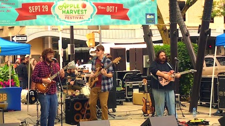
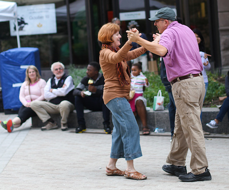
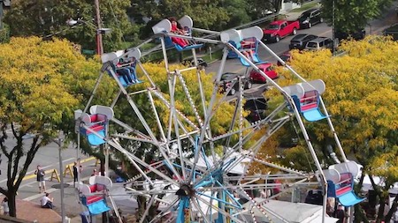
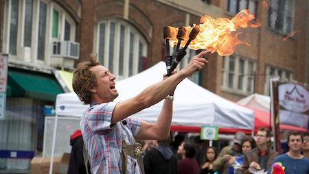

Activities
The 39th Annual Great Downtown Ithaca Apple Harvest Festival by Presented Tompkins Trust Company will feature plenty of apples, local produce, fresh baked goods, family entertainment at every turn, games, rides, prizes, live performances and MORE!
Live Music
 Source: YouTubeLive music is one of Apple Fest's greatest features! At Bernie Milton Stage you'll find tons of different artists and genres from jazz to folk. Featured here is Dapper Dan performing Toots & The Maytals "54-46" in September of 2017.
Dancing
 Source: The IthacanOf course, with music comes dancing. You'll find people dancing on every corner of the Commons!
Rides
 Source: YouTubeWhat's a festival without carnival rides? Featured here is the Ferris Wheel from Apple Fest 2013.
Entertainment
 Source: The IthacanIn addition to music, dancing, and rides, visitors of Ithaca's Apple Harvest Festival will find different kinds of family entertainment. Seen here is Michael Hilby juggling three flaming poles while riding a unicycle. Hilby has performed at the festival in years past.